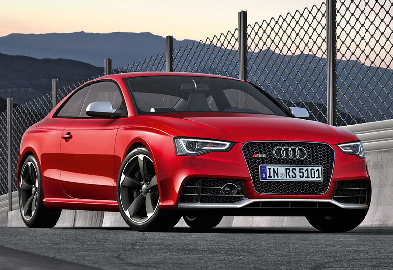
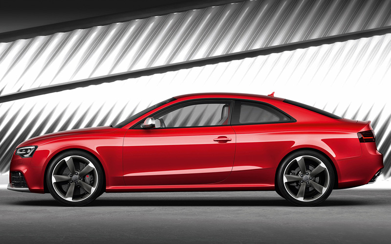
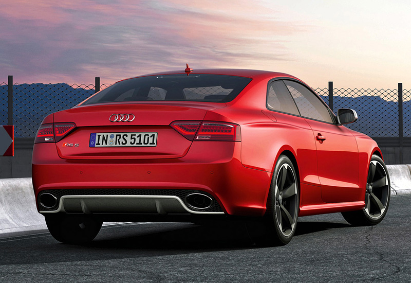
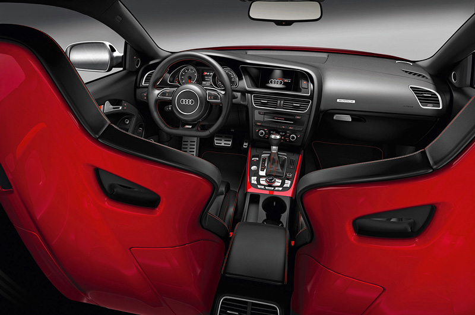
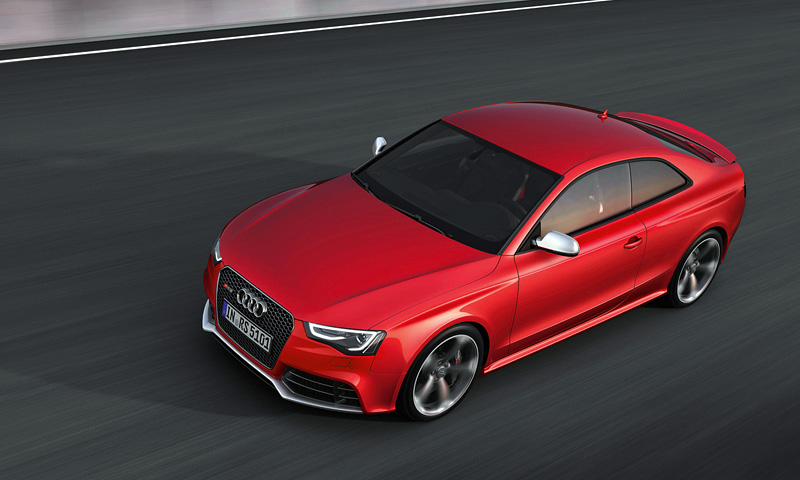

Описание Audi RS5 Coupe
Audi RS5 — изюминкой спортивного купе является не только высокооборотистый бензиновый 4,2-литровый V8, но и наличие в «базе» системы постоянного полного привода quattro с новым дифференциалом, пришедшим на смену более тяжелому агрегату Torsen. Кроме этого в стандартное оснащение RS5 в отличие от Audi A5 и S5 входит спортивный задний дифференциал, ввинчивающий купе при добавлении тяги в повороты.
В обычном состоянии крутящий момент между передними и задними колесами система quattro распределяет в соотношении 40:60, тем самым обеспечивая заднеприводный акцент, который зачастую и ценится в спортивных автомобилях. Тем не менее в случае необходимости до 70% момента может передаваться на переднюю и до 85% — на заднюю ось.
Максимальная мощность V-образного восьмицилиндрового алюминиевого двигателя с непосредственным впрыском достигается на 8 250 об/мин и составляет 450 л.с. Пиковый крутящий момент в 430 Нм доступен в диапазоне 4 000-6 000 об/мин.
До ста километров в час Audi RS5 ускоряется за 4,6 секунды. Лимит максимальной скорости выставлен электроникой на отметке в 250 км/ч. Тем не менее в качестве опции ограничитель можно передвинуть к 280 км/ч. При этом, согласно паспортным данным, расход автомобиля в смешанном цикле составляет 10,8 литра на «сотню» пробега.
В качестве трансмиссии на RS5 используется семискоростная роботизированная коробка S Tronic с усиленными механизмами двойного сцепления, позволяющего спокойно «переваривать» высокий крутящий момент. В компании решили полностью отказаться от «механики», ведь «робот» переключает передачи быстрее, а кроме того умеет тормозить, включая с эффектной перегазовкой при необходимости пониженные ступени.
Заниженная подвеска, бампера с активными диффузорами, а также автоматическое крыло на крышке багажника, поднимающееся на скоростях свыше 120 км/ч, обеспечивают купе хорошей аэродинамикой и прижимной силой, необходимой для уверенной езды на высоких скоростях.
Размер стандартных дисков равен 19 дюймам, но за доплату можно выбрать и 20-дюймовый вариант. В качестве опции для машины доступны более мощные керамические тормозные диски вместо стальных, несколько вариантов спортивных или более комфортных кресел, в том числе и с вентиляцией.
Фото Audi RS5 Coupe



